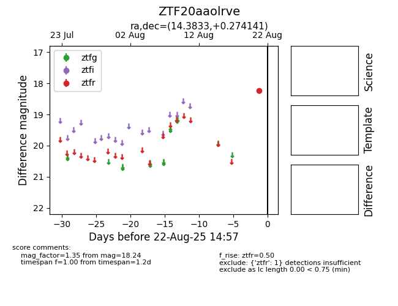

Target ZTF20aaolrve at 2025-08-22 15:31, see:
FINK: fink-portal.org/ZTF20aaolrve
Lasair: lasair-ztf.lsst.ac.uk/objects/ZTF20aaolrve
ALeRCE: alerce.online/object/ZTF20aaolrve
alt names
ZTF20aaolrve (ztf,alerce)
coordinates:
equatorial (ra, dec) = (14.3833,+0.27414)
galactic (l, b) = (126.2400,-62.55845)
photometry
last ztfr=18.24
1 ztfr detections
